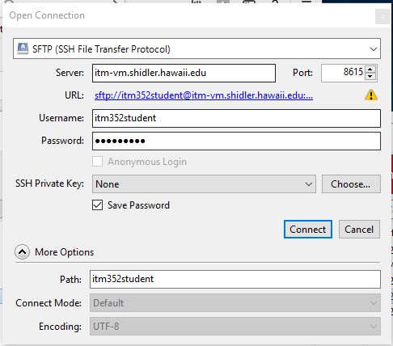

Open the WADT presentation slides.
In class we will see examples, answer questions, and discuss what’s on for next class.
After completing this lab you should be set up with and understand how to make use of the web application development tools we will be using. In particular:
Try to do as many of the exercises as possible, in the order listed. You may skip an exercise if it is impossible to accomplish the task described (for technical reasons). If you have trouble with an exercise, contact the instructor for help – do not just skip the exercise! You may work with a partner, but each of you must submit your individual work. Work should be done electronically on this document (cut and paste as needed but be careful of incorrect characters). Anything that involves code should be tried out in VS Code before submitting (you may cut and paste directly from VS Code). Submit work before the next class. If you cannot submit by this time, try to do so as soon as possible.
For exercises that do not ask specific questions but have you perform tasks, copy any code you created and the output as your answer to the exercise.
COPY this entire page and paste it, with your answers, into the Laulima assignment submission box for this assignment
If you have not installed the git tools or GitHub Desktop skip this exercise. Just create a folder on your desktop called ITM352_F23_repo
hello-world repo (that you created from the Hello World GitHub guide). Go to Settings and change the repo name to ITM352_F23_repo. Change the README.md if you wish. Also in the Settings page, go to the “Danger Zone” and change the repo “Make private” if it is not alreday set this way. Add the instructor and TA as contributors.What is the URL for your GitHub ITM352_F23_repo?
What is the path to the local ITM352_F23_repo?
VS Code is a file editor designed to help build applications (code). Web applications are built from files with instructions that the server and browser process. Let try making a web page and viewing it in a browser.
Lab1, create file in this folder <your Last_First name>_hello.html. Edit this file “Hello from <your first name>!”. Don’t forget to save this file after you make changes!Explain here why you see text in the browser window. Is this a web page?
<b> tags and then enclose all the text in between <html> tags. Save a refresh your browser.Explain here why you do not see the code for the tags in the browser window:
.txt. In your browser window change the .html in the filename in the address bar to .txt and reload the window.Explain here why you do see the code for the tags in the browser window:
Hello type <iExplain why you do not get the Intellisense help for HTML anymore:
.html. Find an HTML tag that will italicize text. Use this tag to italicize your entire greeting. Save and reload your browser window.Explain why you do get the Intellisense help for HTML now and why you do not see the html in the browser window:
Sometimes you will need to do more specific or detailed tasks that would be difficult or inconvenient to do through a GUI. A terminal window provides a command line interface to your operating system. There are many different types of shell environments such as sh, csh,bash, zsh,cmd, powershell that run in a terminal. These all have similar functionality and similar commands, but they may vary in the particular command language and syntax they use. You will find it very useful to be familiar with the basic shell commands. We will explore a few basic file system commands here needed for this class. make sure you are in the Lab1 folder.
a) Open a terminal in VS Code (go to the Terminal menu -> New Terminal). Identify what shell is being used:
b) Try each of the commands below, copy the result you get and explain what the command does:
pwd
ls
mkdir newdir
cd new*
touch test
mv test test.txt
rm test.txt
echo hello > hello.txt
cat h*.txt
cd ..
rm -r newdir
history
NOTE: if a command doesn’t work for your particular shell, look up (or guess) what the command is supposed to do and then do a Google search to find out how to do it in your shell.
c) Most shells support command history. What happens if you press the uparrow key? downarrow key?
d) Most shells support file name expansion. Try touch xxxx.txt then rm xx then hit the TAB key. What happened?
Most browsers will have a Javascript console. Right-click –> Inspect then try the and explain the following:
1+1
2/3
'hello' + "there"
{"a":1, "b":2}
[1,2,3]
console.log('hello')
For convenience and speed we will test applications on our own machine before deploying to a server. Web applications that need only provide web pages to a web browser from files (sometimes called static pages) can use a simple web server that accesses the static page files (or documents) from a single directory (the document root). Web browsers typically communicate with web servers using the HTTP protocol (there are many other network communication protocols) which is why a basic web server is often called an http server. Node has many ready to use http server packages (such as the http-server package) that will work as a local web server without any configuration or coding. We will be learning how to build web applications that will not have just static pages. So in preparation for this, we will build our own simple http-server using the Node Express framework. You do not need to understand this framework or how the code works at this point. For now, just understand what this code does and how to use it to serve static pages.
node --versionLab1 folder. If you are in Lab1 then cd .. to be in the parent folder.npm install express Note for Mac users: you may need to add sudo to the front of this to override file permission restrictions.npm install minimist Note for Mac users: you may need to add sudo to the front of this to override file permission restrictions.const argv = require('minimist')(process.argv.slice(2));
const express = require('express');
const app = express();
app.all('*', function (request, response, next) {
console.log(request.method + ' to path ' + request.path);
next();
});
let root = (typeof argv["rootdir"] != "undefined")?argv["rootdir"] : ".";
app.use(express.static( root ));
app.listen(8080, () => console.log(`listening on port 8080 rootdir ${root}`));
Lab1 folder. If you are not, change to the directory (cd Lab1 if you are still in the top-level directory). Start your local http-server by typing node ../server.js.http://localhost:8080/<your Last_First name>_hello.html and verify it is served rather than loaded directly into the browser (you should see http://localhost:8080/<your Last_First name>_hello.html rather than the file path in the browser address box)static and move your <your Last_First name>_hello.html file into the static directory.http://localhost:8080/<your Last_First name>_hello.html and explain why the server cannot GET the filehttp://localhost:8080/static/<your Last_First name>_hello.html and explain why the file now appears in the browsernode server.js --rootdir ./static open a browser to http://localhost:8080/<your Last_First name>_hello.html and explain why the file now appears in the browser but you no longer need static in the pathcd .. to move to the top of your repo (should be the directory above the Lab1 directory). Start your local http-server by typing node ./server.js --rootdir ./Lab1/static open a browser to http://localhost:8080/<your Last_First name>_hello.html and explain why the file now appears in the browser and you do not need the Lab1/static in the URL path.node server.js open a browser to http://localhost:8080/Lab1/static/<your Last_First name>_hello.html and explain why the file now appears in the browser and you do need the Lab1/static in the URL path.NOTE: If the server fails to run and you get a port already in use error you may have another process using port 8080. Try changing the port to something else like 8081 and try running again. **
Go to the terminal window in VS Code and copy and paste here the output after you started http-server. Explain what this output is:
Explain how the page in the browser window was loaded. Why is the URL path not the same as the filepath for the file in your Lab1 directory?
What would happen if you did not have <your Last_First name>_hello.html in the static directory? Use this to explain why you cannot request server.js from a browser.
Explain why you do not see the page anymore:
Explain here how this is different than what you did previously. Is your file now a web page?
There really is no difference between the web server such as you installed on your laptop for class and any other web server on the internet. It’s really a matter of accessibility. A local web server is accessed though the URL http://localhost where localhost is always set to the IP address 10.0.0.1 or 127.0.0.1 (which is also known as the “local loopback”). Anytime you try to connect to localhost you will always be connecting to your own machine. So if you set your web server’s address to be localhost it then can only be accessed from your machine regardless if it is connected to the internet (or any network). A global web server simply has it’s address set to some globally accessible IP address (and possibly an internet registered domain name).
You should always develop your web applications locally and then “publish” them–after careful testing–to a global web server (that is if you want the outside world to be able to access it). For our class we have made available to you the global web server http://itm-vm.shidler.hawaii.edu/itm352student and this is where you should test all your applications if they are intended to be used non-locally.
Locate the file you created to test your local web server from exercise 3 above.
<ask instructor> with password <ask instructor> you must use port 8615 You can try this link or copy and paste it into the Server textbox sftp://itm352student@itm-vm.shidler.hawaii.edu:8615/See http://www.hawaii.edu/askus/692 for more information on SSH/sFTP
http://itm-vm.shidler.hawaii.edu/itm352student/<your class section>/<your Last_First name>_hello.html For example http://itm-vm.shidler.hawaii.edu/itm352student/Section_Port/Port_hello.htmIf you are using Cyberduck here is what your open connection should look like this:

How do you make websites?
What’s the difference between a local and global webserver?
How do webservers, local or global, work with VS Code?